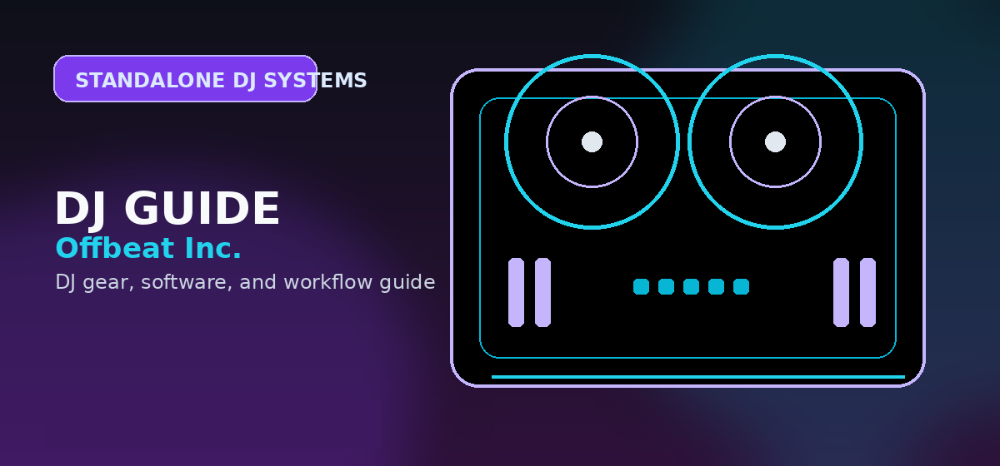

XDJ-AZ vs Denon Prime 4+
A flagship standalone DJ system comparison for buyers choosing between AlphaTheta/Pioneer-style club continuity and Denon Engine DJ feature density.

Disclosure: This page uses affiliate links. We may earn a commission at no extra cost to you. Full disclosure →
A flagship standalone DJ system comparison for buyers choosing between AlphaTheta/Pioneer-style club continuity and Denon Engine DJ feature density.
Verdict: XDJ-AZ for club continuity, Prime 4+ for feature density
The XDJ-AZ and Denon DJ Prime 4+ are not interchangeable just because both are high-ticket standalone systems. The XDJ-AZ is the stronger fit for DJs invested in AlphaTheta/Pioneer-style club preparation, rekordbox continuity, and a professional layout. The Prime 4+ is the stronger fit for feature-hungry standalone users who want Engine DJ flexibility, aggressive streaming accessibility, and a mobile/event-friendly all-in-one feature set.
Choose XDJ-AZ if
- You want AlphaTheta/Pioneer workflow continuity.
- rekordbox and club preparation matter.
- You value layout familiarity over maximum feature count.
- You want a professional four-channel all-in-one system with current Serato support context.
Choose Prime 4+ if
- You want the most standalone features for mobile/event use.
- Engine DJ workflow appeals to you.
- You care about large-screen standalone browsing and streaming accessibility.
- You are not trying to mimic the common club booth path.
Feature comparison
| Decision factor | AlphaTheta XDJ-AZ | Denon DJ Prime 4+ |
|---|---|---|
| Best ecosystem fit | rekordbox / AlphaTheta / Pioneer-style preparation | Engine DJ / Denon standalone workflow |
| Decks/channels | Four-channel professional all-in-one direction | Four-deck standalone direction |
| Club preparation | Stronger if the you want AlphaTheta/Pioneer continuity | Less club-standard but feature-rich |
| Streaming appeal | Strong current Apple Music and modern AlphaTheta context | Strong streaming-accessibility positioning in Denon’s standalone ecosystem |
| Mobile event appeal | Professional but large and premium-priced | Very compelling for feature-heavy mobile/event DJs |
| Buyer risk | Paying a premium for ecosystem fit and familiarity | Choosing a workflow less familiar in many club booths |
Workflow differences that matter more than specs
Spec sheets are not enough. The XDJ-AZ buyer usually wants to feel at home when moving between a personal rig, rekordbox library prep, and AlphaTheta/Pioneer-style club setups. The Prime 4+ buyer usually wants a powerful self-contained station with Engine DJ features, streaming access, and a strong value story relative to the cost of separate players and mixer.
The real purchase question
Ask: “Am I buying a home version of the ecosystem I expect to encounter professionally, or am I buying the most capable standalone environment for my own mobile/event workflow?” That answer decides this comparison faster than arguing about one extra feature.
Who should not buy either
Do not buy either flagship system if you are still a beginner deciding whether DJing will stick. Start with beginner controllers or software first. Also avoid both if you mainly need a compact house-party setup; a smaller controller or portable standalone unit may be a better fit.
How to make the final choice
Do not treat one flagship as objectively better for every DJ. The XDJ-AZ and Prime 4+ serve different assumptions. The XDJ-AZ assumes the buyer values AlphaTheta/Pioneer-style continuity, rekordbox preparation, and a familiar professional booth language. The Prime 4+ assumes the buyer values feature density, Engine DJ, streaming accessibility, and an all-in-one feature set that stands on its own.
The comparison should also qualify streaming claims. StreamingDirectPlay, Apple Music support, Engine DJ services, and Serato support are valuable, but the buyer still needs to check firmware, accounts, region, and restrictions before purchase. At this tier, a mistaken assumption can become an expensive return.
Practical checklist before you decide
Use this page as one part of the decision, not the whole decision. Confirm the current price, software compatibility, operating-system support, and whether the option still fits the way you actually practice or perform.
- Fit: choose the option that matches your current workflow and the setup you expect to use for the next year.
- Compatibility: verify exact hardware, app, subscription, and file-format requirements before buying or switching.
- Reliability: avoid workflows that depend on one fragile adapter, one unstable app version, or an internet connection with no backup.
- Upgrade path: favor tools that can grow with you instead of forcing another purchase as soon as you start recording mixes or playing longer sets.
Which standalone system fits which working DJ?
Choose the XDJ-AZ when Pioneer/AlphaTheta continuity, rekordbox library habits, and booth familiarity matter most. Choose the Prime 4+ when all-in-one flexibility, screen workflow, and feature density matter more than matching the most common club layout.
For mobile DJs, the stronger choice depends on outputs, setup speed, streaming needs, and how often you need to hand off to other DJs. For club-prep DJs, the safer choice is the one that keeps your library and layout closest to the gear you expect to encounter in booths.
Official product and support pages
Choose XDJ-AZ when club-standard rekordbox transfer is the priority.
Choose Prime 4+ when value, standalone flexibility, and Engine DJ features matter more.
The real decision is ecosystem lock-in, not raw feature count.
Use these official pages to confirm current specifications, software compatibility, and support details before buying.
Frequently Asked Questions
Is the XDJ-AZ better than the Denon Prime 4+?
It is better for AlphaTheta/Pioneer-style club continuity. The Prime 4+ can be better for feature-dense standalone mobile/event use.
Which is better for rekordbox users?
The XDJ-AZ is the clearer rekordbox/AlphaTheta path.
Which is better for mobile DJs?
The Prime 4+ is very compelling for feature-heavy mobile DJs, while the XDJ-AZ is stronger for buyers prioritizing club-style ecosystem continuity.
What should I check before buying this DJ controller?
Confirm software compatibility, audio outputs, headphone cueing, driver support, and whether the controller fits your real practice or gig setup.
Is this controller category good for beginners?
It can be, but beginners should prioritize reliable software support, simple routing, and controls that teach transferable DJ habits before paying for advanced performance features.